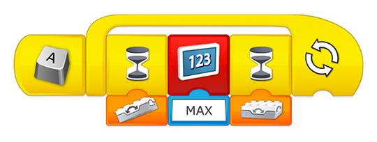
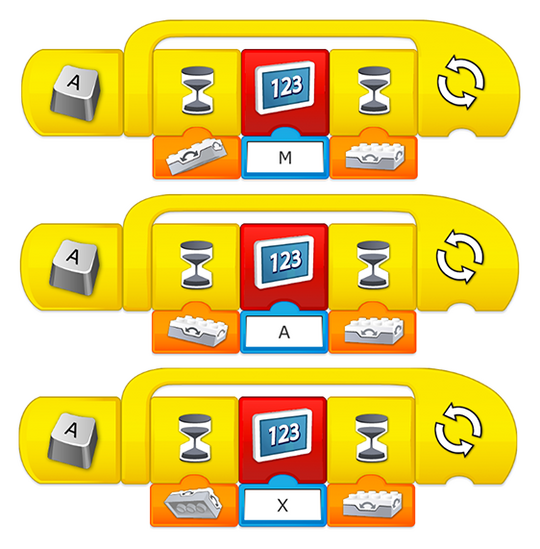
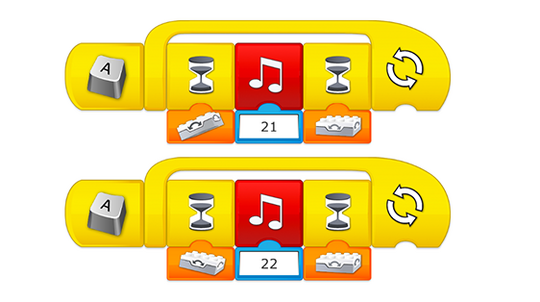
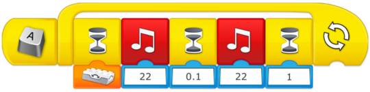

De evaluatie hoeft niet al deze vaardigheden te bevatten; je mag de nadruk leggen op de vaardigheden die voor jou en voor je leerlingen het meest relevant zijn.
De leerlingen in staat stellen patronen te herkennen (Veralgemeniseren)
Een patroon is iets wat op dezelfde manier in verschillende situaties kan worden toegepast. Je leerlingen moeten voor dit project nadenken over de volgende patronen:
Hoe kunnen ze het korte signaal van morsecode verzenden?
Hoe kunnen ze het lange signaal van morsecode verzenden?
De leerlingen een reeks acties leren programmeren (Algoritmisch denken)
De leerlingen moeten een reeks acties coderen waarmee signalen worden verzonden om het woord “Max” of “Mia” weer te geven. In morsecode wordt het woord “Max” als volgt weergegeven: M (lang, lang); A (kort, lang); X (kort, kort, kort, kort).
De leerlingen kunnen verschillende strategieën toepassen:
Per woorden coderen: programmeer het volledige woord wanneer de joystick omhoog wordt gekanteld.

Per letter coderen: programmeer de letter “M” wanneer de joystick omhoog wordt gekanteld, “A” wanneer deze naar beneden wordt gekanteld en “X” wanneer deze naar links wordt gekanteld.

Met geluiden coderen (zoals een morseapparaat): programmeer het korte geluid wanneer de joystick omhoog wordt gekanteld en het lange geluid wanneer deze naar beneden wordt gekanteld. Met deze optie moeten de leerlingen de joystick bewegen om een bericht te verzenden. Eén van de mogelijke oplossingen voor deze optie is de volgende:

Laat je leerlingen dit proces vastleggen met behulp van de documentatietool
De leerlingen in staat stellen hun oplossing te verbeteren (Evaluatie)
De leerlingen testen hun programma‘s en passen de parameters aan waarvan ze denken dat deze de werking van het apparaat zullen verbeteren.
Programmeerhulp
Een volledige letter programmeren
Om één letter tegelijk met behulp van morsecode te programmeren, moeten de leerlingen wellicht een korte pauze tussen elk signaal invoeren. De letter “M”, die bestaat uit twee lange signalen, kan bijvoorbeeld als volgt worden geprogrammeerd:
